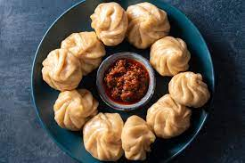

Momo Recipe
What are Momos?
Momos are dumplings made with flour and a savory stuffing.
This stuffing can be made with veggies, sea-food, chicken or paneer

List of Ingredients :
- All-purpose flour
- Oil
- Salt
- Water
- Spring Onions
- Chopped Garlic
- Preferred Filling
Steps:
- Making the dough
- Making the stuffing
- Shape the dough
- Steam the Momos